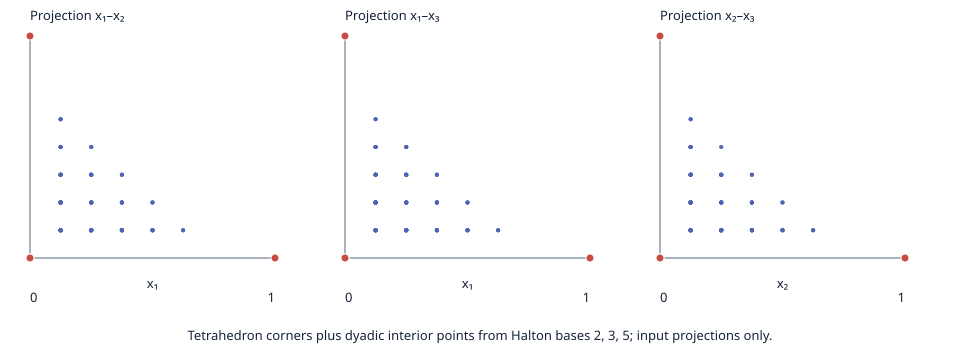

The workload has four tetrahedron corners and 246 dyadic interior points. Halton bases 2, 3, and 5 deterministically select strictly positive barycentric weights in multiples of 1/8, making interior-point removal certificates exactly representable. Five LP reducers ran with one warmup and five measured calls each. An independent exact-rational validator verifies each removal certificate and its acyclic expansion to the retained source points. This proves equality of the finite input hull and returned hull even when a reducer conservatively retains some redundant points.
QuickHull is recorded as unsupported because the registered geometric implementation is 2D-only. The plotted projections show input points only; red markers identify the tetrahedron corners. The earlier pure Halton cloud retained every point and is preserved in the initial exploratory attempt.

| Method | Hull checks | Complete | Retained | Median (ms) | Range (ms) | Timing interpretation |
|---|---|---|---|---|---|---|
| Baseline LP | 5/5 | 0/5 | — | — | — | Withheld: incomplete reducer |
| Basis reuse (A43-related) | 5/5 | 5/5 | 4 | 0.957739 | 0.940070–0.962279 | Descriptive only; no speedup claim |
| Ordered LP (A44-related) | 5/5 | 0/5 | — | — | — | Withheld: incomplete reducer |
| A43 safe adaptation | 5/5 | 5/5 | 4 | 1.650499 | 1.591902–1.657902 | Descriptive only; no speedup claim |
| A44 incremental adaptation | 5/5 | 5/5 | 4 | 28.256975 | 27.372360–29.494640 | Descriptive only; no speedup claim |
| QuickHull (unsupported) | — | unsupported in 3D | — | — | — | No timing |
Measured code commit cac63501496abf9598edab3943a0b35c0f274ae5; binary64 input manifest SHA256 58d2c54c5978705db7f065bf09318ed07399e0a0958b4ec295b2d870a2fe897f; LP backend HiGHS 1.11.0. Full method identities and every raw attempt are in validated rows; download the offline report bundle.